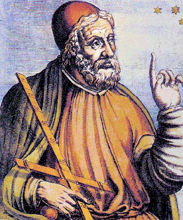

Ptolemy was an astronomer, mathemetician and geographer in the second century A.D. He codified the Greek geocentric view of the universe, and rationalized the apparent retrograde motion of the planets using epicycles. The Ptolemaic system remained the accepted wisdom until the Polish scholar Copernicus proposed a heliocentric view in 1543.